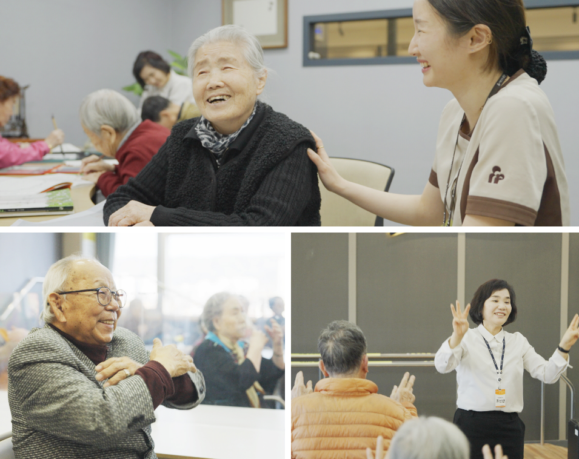
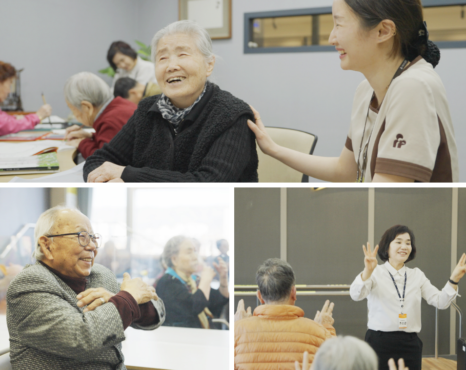

희연요양병원
단 한 건의 신체억제·욕창발생도 허용하지 않은
한국 만성기 의료의 파이오니어, 희연병원
희연요양병원에는 ‘모든 이의 삶에 대한 존경’의 희연 철학을 기반으로 전 4인 병실과 낙상방지 화장실, 휴게·다이닝 공간, 병실 바로 앞 재활치료실 등 국내 최고의 입원 환경과 시스템을 마련하였습니다.
각각 다른 특징과 콘셉트를 가진 병동은 환자의 개별적 특성과 케어 목적에 가장 부합한 의료 서비스를 제공하여 하루 빨리 건강하게 일상으로 복귀하실 수 있도록 적극 지원합니다.
 

완충병동은 자연과 우리 집 콘셉트를 접목한 병동으로서
‘급성기·회복기 단계의 재활기능 호전 중 추가적인 일상복귀 훈련지원이 필요한
만성기 재활 환자’들을 위해 만들어진 만들어진 재활과 요양의 중간개념 병동입니다.
현재 보건 의료 정책과 제도에는 없는 ‘새로운 개념’의 병동이며, 재활기능 호전 중 입원기간 경과로 인해 퇴원이 불가피한 분들의 일상복귀 재활훈련 지원을 목적으로 체계적인 시스템을 갖추었습니다.

4완충병동 운영 안내
인지재활병동과 혈액투석병동
다양한 원인으로 인한 인지장애가 진행함에 따라 인지·신체기능 저하뿐만 아니라 우울, 배회, 불안, 공격, 망상 등의 행동심리증상(BPSD)이 발현되는데, 현재 환자에게 어떤 증상을 보이는지, 증상이 나타나는 원인에 대해 관심을 가지고 적절한 대처를 해주어야 합니다.
불안정한 심리는 증상을 악화시키는 악영향을 줄 수 있기 때문에 심리안정치료실(Snoezelen)을 운영하여 시각, 청각, 촉각, 후각, 고유수용감각, 전정감각 등의 감각자극을 통해 기분 좋은 경험을 함으로써 긴장 완화 및 정서적 안정을 유도합니다.v
또한, 혈액투석케어를 전문으로 하는 ‘혈액투석 전용병동’을 국내유일 운영하며 인공신장센터의 의료진과 혈액투석 병동 내 간호인력, 물리·작업·언어치료사, 사회복지사 등 여러 직군이 어우러진 다학제 의료서비스를 실시하고 있습니다.

3만성기병동 운영 안내
만성기병동
와상 및 거동이 불편한 상태 및 욕창환자 등 만성기 질환으로 인한 전문적인 의료케어가 필요하신 환자분들을 위해 마련된 병동으로서 내과, 가정의학과, 재활의학과 전문의와 한의사가 상주하고 있으며, 전문 간호인력들과 관절구축, 욕창예방 및 신체 기능호전을 위한 재활치료사·사회복지사·영양사· 치과위생사 등 환자 존엄케어를 위해 만성기병동은 365일, 24시간 바삐 움직입니다.